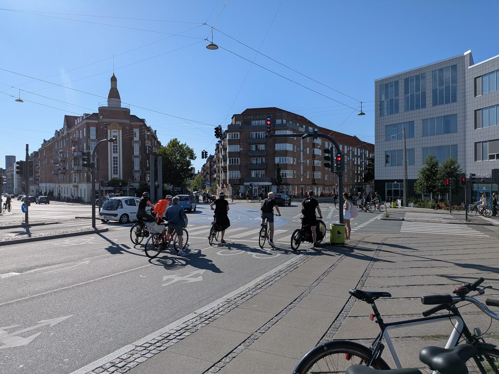
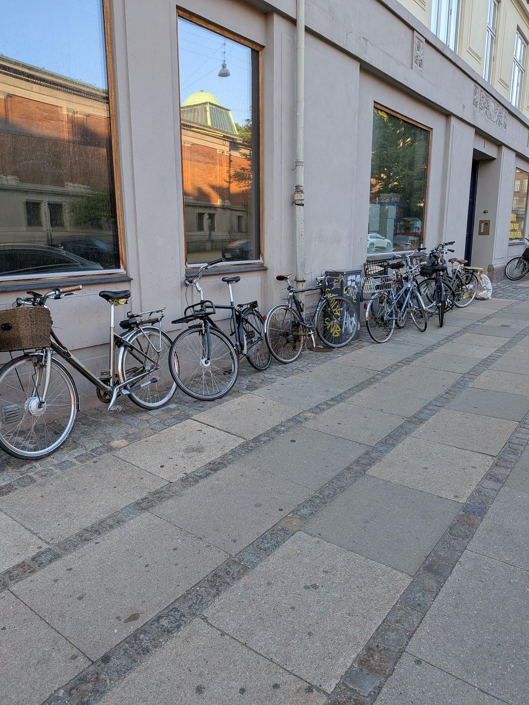
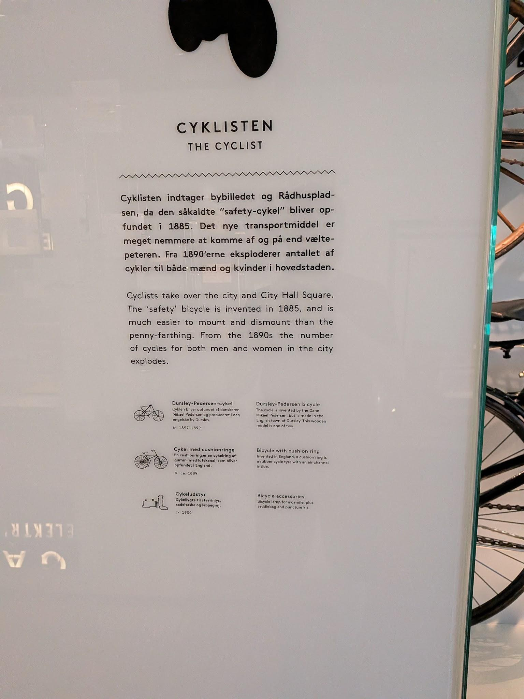
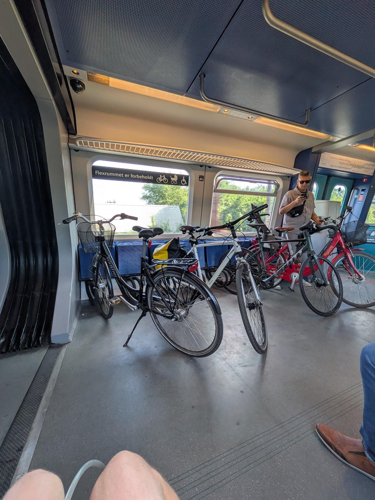
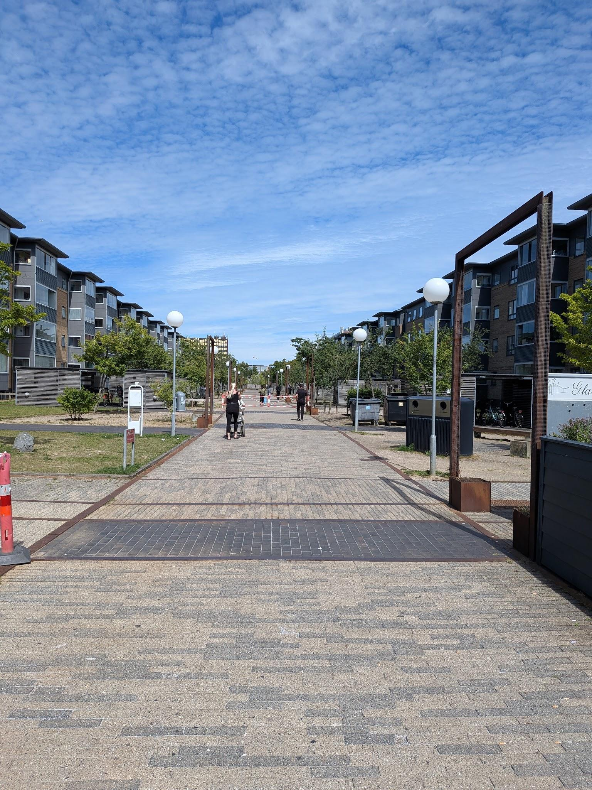
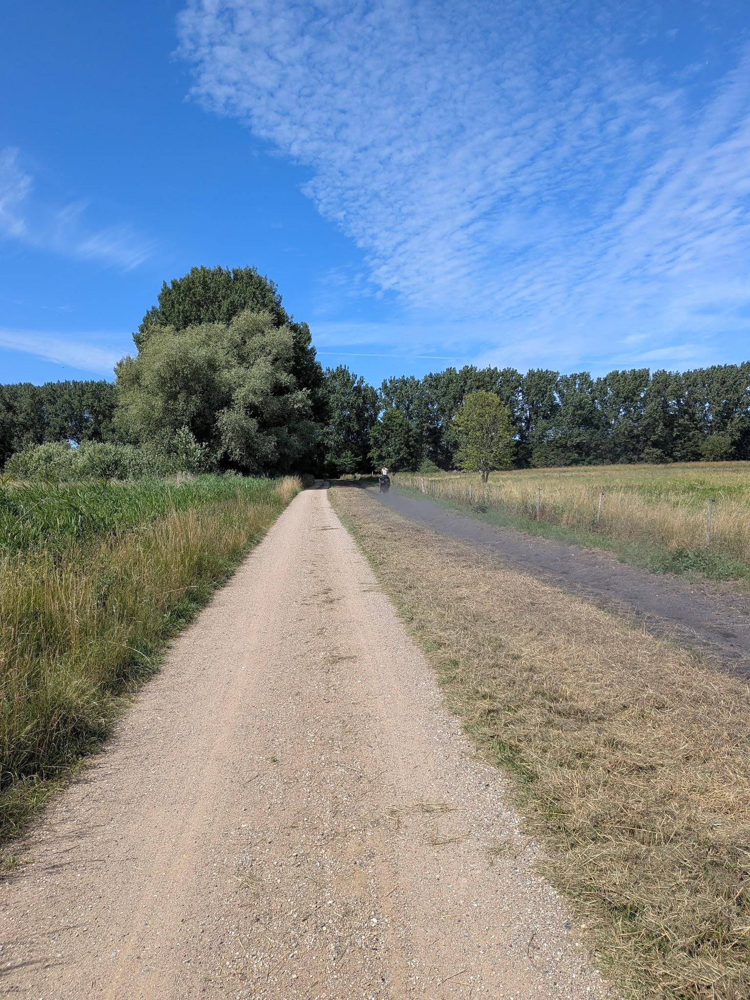

It is fitting that my first stop is one of the great bicycle cities in the world, Copenhagen. Ranked as the most liveable city in the world for the past two years, Copenhagen ranked as number two in the Copenhagenize index, as the second most bicycle-friendly city in the world.
It’s easy to compare Copenhagen to the great cycling cities of the Netherlands of Amsterdam and Utrecht as they have slowly iterated through an urban evolution to reach parallel outcomes in different ways.
Where the Dutch road and cycling infrastructure design feels very regimented in its orderly nature of coherently designing roads and streets to meet an elite standard, Copenhagen feels a bit more creative in the ways in which road space has been taken back from cars. It feels less cohesive than in the Netherlands, but overall, it provides for a similar outstanding cycling experience.

Image 1: Wide dual lane bicycle lanes near the main train station.
The first thing you will notice about bicycles in Copenhagen is they are everywhere. In what is either high social trust or the idea of bicycles belonging to the people, everyone just parks up with their rear wheel ‘café lock’ and leaves their bicycle easily able to be picked up and taken away. Given that there are more bicycles than people at approximately 740 thousand bicycles to 645 thousand people, bikes in Copenhagen are somewhat disposable and seeing a fancy expensive bike is a rare occurrence.

Image 2: Bicycles “parked” near a supermarket.
This notable lack of cars is the first real win for Copenhagen; the city has only 132 thousand cars for the 645 thousand residents. It is an important reminder coming from a place where we fight tooth and nail for some protection amongst our streets, that the first step on the hierarchy of controls when minimising risk is elimination. Through elimination by reducing or removing cars the need for separated lanes is removed.
There is a great sense of pride and cycling culture within the city. When you first get off the plane and pick up pamphlets at the airport, you find a guide to cycling laws in Copenhagen. Denmark is a country obsessed with good design, and the design and care that goes into the urban realm of things such as bicycle lanes, playgrounds, bridges are reflected in this. Even the interior of trains and the design of the bicycle racks is well thought out and aesthetically pleasing. In the Museums there are specific sections about how cycling in Copenhagen have changed over time, with a whole section in the Danish Architecture Centre dedicated to Jan Gehl and the transformation of Copenhagen’s urban realm.

Image 3: Part of Museum of Copenhagen permanent exhibition.
Copenhagen is a place that cares deeply about people’s happiness and the happiness of children. It is no surprise then that they have deeply embedded the bicycle as a means for all urban life. It’s something we forget when we dive into infrastructure design, increasing cycling rates, network analysis and all the weeds of the details. Riding a bicycle is inherently fun. In Copenhagen not only is it fun, but it is also the easiest and fastest way to get around door to door. Attention to detail in the cycling experience is outstanding with things such as the footrest and handrails at traffic lights for cyclists to rest and the excellent bike holders on trains really adding polish to the experience.

Image 4: Bicycle holders on S-Bahn Trains.
The next most impressive thing is just how much this design and infrastructure choice is determined by data. There is endless open data about all sorts of things in Denmark. Without before and after data, spending money on any infrastructure is a pointless exercise as there is no way of measuring whether the project was a success. By providing this data openly it empowers citizens, and academics to advocate for improvements in problem spots.
I recommend having a look there’s all sorts of fun exciting things you can dig into.
https://cphsolutionslab.kk.dk/en/focus-areas/open-data-dk
If there is one statistic that will tell you how safe cyclists feel without needing to ask them, it is what percentage of women are riding. Copenhagen sits almost perfectly at an even split. People ride predominately city bikes, and wear whatever they plan on wearing at their destination. Helmets are a very rare sight, people ride side by side and chat, people can be seen carrying all sorts of things, especially in cargo bikes. These are basically the SUVs of Copenhagen with the parents doing the school run or grocery run a common site.
Most of Copenhagen's bicycle infrastructure is single lane either side of the street separated cycle paths, raised up from the roadway and lowered from the footpath. This creates a clear distinction between where cars are allowed, bicycles are allowed and pedestrians are allowed. In providing for single lane either side with no left turns allowed without first turning right into a right turn box, which often have their own signals, this makes cyclists (maybe except for the tourists) very predictable in their behaviour, with a signal left, signal right and a signal stop approach meaning everyone knows where everyone else is planning on going.
Intersections are the most dangerous place for bicyclists, in Germany 2 out of 3 bicycle crashes occur at intersections, in the Netherlands it's 3 out of 5 and in Australia it's also 56% of crashes (Schroter et al, 2022) (Austroads, 2002).
Copenhagen’s approach is quite simple but effective, with dedicated bicycle lights that give a four second head start, allowing the flock of cyclists that congregate in the bicycle box to flow through before any car enters the intersection.
As Copenhagen is often ranked as the best or second-best cycling city in the world, there are limited areas for improvement. However, there are still wide arterials that funnel cars through the downtown, and significantly wide streets that never seemed to get the traffic their allocated road space deserved. The most notable of these was HC Andersons Boulevard, running directly through the centre of the city.
Interestingly, while bicycle infrastructure was wide and safe, the pedestrian experience was a bit lacking with minimal room for more than two people to pass even in the downtown area where foot traffic was high. The outcome of this in the touristy downtown areas was that pedestrians would spill out onto bicycle lanes, creating potential conflict zones.
Once you go to the Netherlands and experience smart light timings for cyclists that detect cyclists coming and turn green every other signalised intersection feels slow and inadequate. From a user experience this was probably the one aspect that noticeably separated Copenhagen from Dutch cities. On further research it looks like the city has started investing in this technology and maybe I did just get unlucky in where I went in not finding these newly implemented smart traffic signals that prioritise bicycles and buses.
I’m not sure if it was jetlag, but I found navigating the city on bicycle quite challenging. Signage to important locations was a bit lacking. I have found cities with less comprehensive bicycle infrastructure are often better in this regard, as signage is put up to direct you to the best infrastructure. I think part of this was Copenhagen is very flat, has multiple canals that run through it and limited iconic bit pointy things that act as bearing getters. I might investigate this in a further post about what makes a city easy to navigate.
What was most impressive was the cycling infrastructure outside the city in the suburbs of Copenhagen. I explored some random suburbs approximately 20km from the city centre which had cycling underpasses and overpasses that bypassed highways and a separated cycle and car network that meant I could avoid car traffic entirely.

Image 5: Apartment buildings in the suburb of Ishøj, approximately a 10 minute walk to the S-Bahn about 24km from downtown Copenhagen.
It feels odd calling these places suburbs as the density around train stations was impressive, with the surrounding areas often having large apartment buildings ranging from 4-12 storeys. What is most interesting is go a 15-minute ride from the train station and you enter farmland, with people riding horses! It’s an interesting experience and you can very much feel the finger plan of Copenhagen at work in focusing housing along the branching trainlines and retaining greenspace.

Image 6: Horse riding and farmland taken less than a 10 minute bike ride from the previous photo.
My only regret disappointed with Copenhagen is that I went there first, setting an unrealistic bar for all the other great bicycle cities I will visit.
Austroads 2002, Investigation of Cyclist Safety at Intersections, Austroads, viewed 8 August 2026, https://austroads.gov.au/publications/road-safety/ap-r206-02.
Schröter, B, Hantschel, S, Huber, S & Gerike, R 2023, ‘Determinants of bicycle crashes at urban signalized intersections’, Journal of Safety Research, vol. 87, Elsevier BV, pp. 132–142.